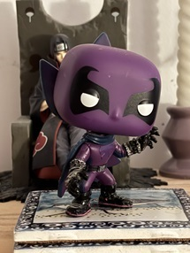
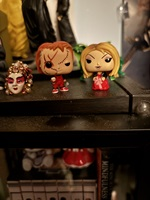
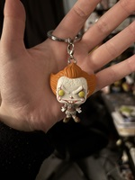
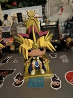

All about Funko Pop! figures!!!
This website's purpose is to document and discuss my collection of Funko Pop! figurines. The website will have 4 sections:
- About
- A brief overview of the Funko brand: the company, its history, its products and where to get official information.
- Display and Organization
- How my collection is currently displayed, as well as suggestions from other collectors.
- Funko Pop! figurines vs. Traditional figurines
- Comparison between Funko Pop! figures and traditional figurines.
- Places to get Funko Pop! figures
- A list of local stores in Ottawa and Quebec that offer Funko Pop! products.
My Story: Funko Pop! figures and Me
I have been a ‘fan’ since high school.
I have been interested in fandoms ranging from anime, manga, comics, obscure movies and tv shows and beyond, and my interests have only expanded with time. One would think that the Funko brand, a company known for its wide range of licensing agreements allowing it to produce figurines for a mind-boggling variety of fandoms, would naturally be a favourite for me.
Not so. Not at first.
I received my first Funko Pop! figure in a blind box of Marvel merch that I purchased from a favourite comic shop in (probably) 2019. You can see him below - he is purple and I have never figured out who he is. He is a bobblehead Funko. My mom loved him (despite also having no idea who this character is).
I didn’t like him. My main issue with all Funko Pop! Figures at the time: I didn’t like the big heads.
Looking back, I cannot quite recall what was so bad about the big heads.
It is 2025 and I now have a collection of 29 Funko Pops representing 17 distinct fandoms (the number inexplicably rising every time I visit a comic or collectibles shop). They have expanded from a small group on my desk to having a presence in every floor of my house. I have spread the contagion of Funko collection to my whole family, all of whom have received Funko collectibles from me and gone on to purchase their own. I have Funko products of just about every type: normal, bobblehead, deluxe, keychains, minis. Click through the images below to see examples of my deluxe, mini and keychain Funko Pop! products!
😀 And I have every intention of continuing to collect more and more 😀
> > >